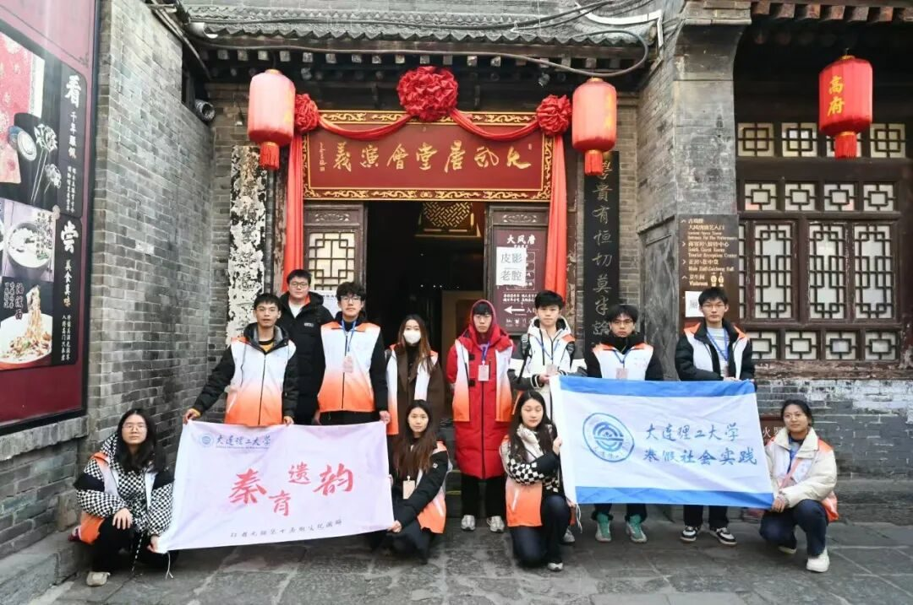
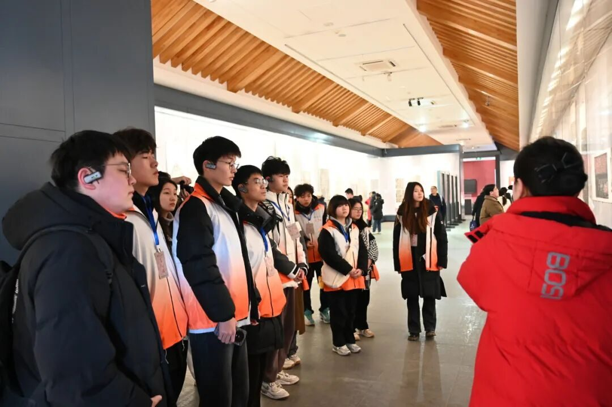
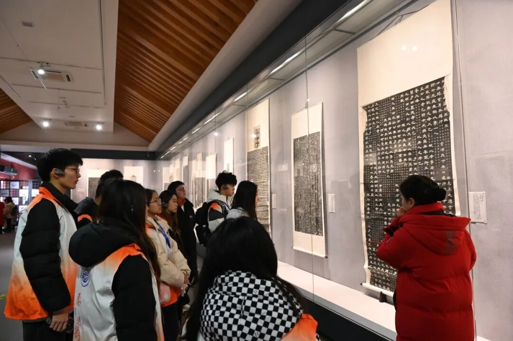
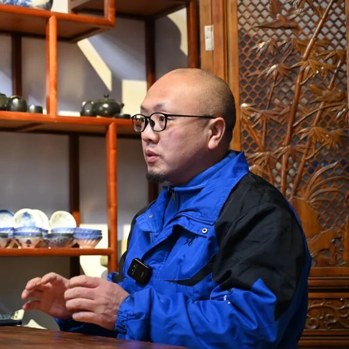
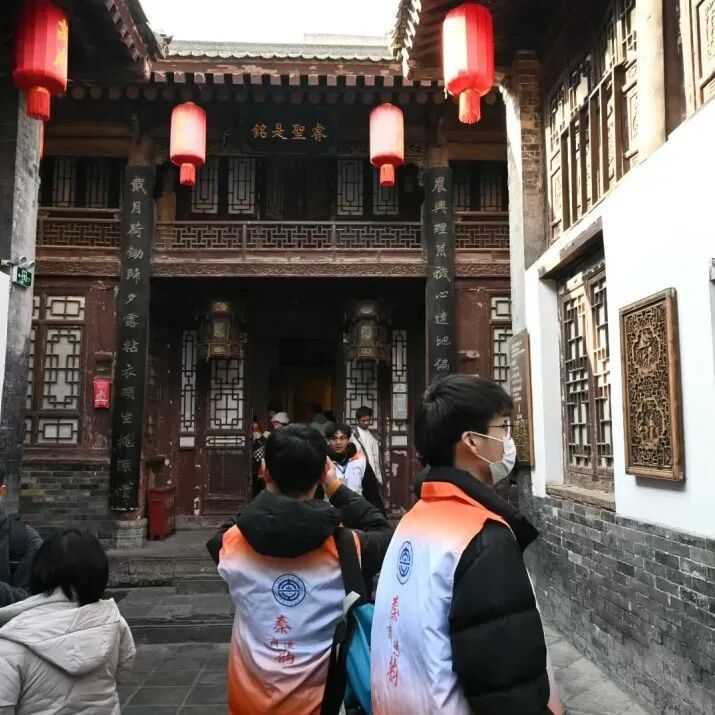
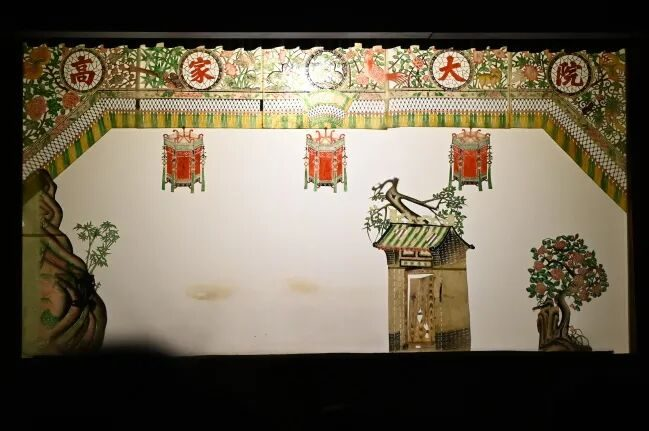
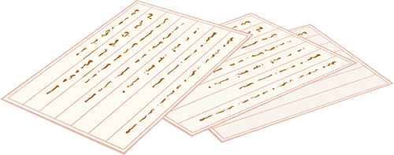

【行者无疆∙秦韵遗风】继古风墨拓碑林，传雅乐影动高院

碑林藏珍宝，拓印韵古道。
高院风情浓，皮影情意绕。
碑林有灵，翰墨隽永

上午，行者们踏入了西安碑林博物馆，其中的展品琳琅满目，价值非凡。讲解员从宋朝仿制的小篆，秦朝改良的行书，讲到唐宋的行楷；从颜真卿雄浑有力的颜体，王羲之登峰造极的行书，讲到张旭豪迈奔放的草书；从《孝经》，《肚痛帖》，讲到《开成石经》。队友们深深被碑林的深厚文化所折服。

之后行者们走过书院门步行街，在步行街非遗文化体验馆中体验了西安的非遗拓印。拓印时，将纸张覆于物体表面，用墨汁或颜料涂抹，就能呈现物体的纹理图案。队员们沉浸其中，周围喧嚣仿佛都已远去。不多时，桌上便摆满拓印成品，每一幅都古朴雅致。大家凝视着这些作品，不禁为古人的智慧所折服，也在这一方方拓印里，真切领略到传统文化如陈酿般醇厚悠长的独特魅力。
关于非遗体验馆的专访
在谈及“非遗+教育”的话题时，老板的言辞间满是热忱。他强调“非遗+教育”意义重大，能让年轻人亲近非遗，为传承注入活力。在实践中，将剪纸、陶艺等非遗项目引入校园开设手工课程，让学生亲身参与，更能增强他们对非遗的感知。

老板还分享了自己投身非遗体验行业的初衷，他真挚地说，赚钱并非目的，真正想做的是把非遗背后的动人故事讲述给更多人，通过教育让大众深入了解非遗，唯有如此，非遗才能在时代浪潮中稳健前行，经久不衰。
光影流转，千年的传承
下午，行者们齐聚高家大院。一踏入，精美的砖刻木雕便映入眼帘，搭配高耸房屋与坚实墙壁，其独特建筑风格与错落院落布局，尽显典型陕西民居特色。
游览完大院，行者们移步戏台去观看皮影戏表演。只见幕布后，表演者将皮影操控得灵动鲜活，人物仿若跃然而出。与此同时，震撼的唱腔与恰到好处的配乐相得益彰，让行者们沉浸式领略了地道的陕西特色文化。
结束了高家大院的参观后，行者们兵分四路，对回民街沿途的行人和商贩关于“非遗+教育”主题进行了专题采访。



-END-
来源 | 行者无疆实践团
图片 | 梁棋鑫
文字 | 刘宇凯
编辑 | 郑瑞瑄
审核 | 李凌志 杩健辉
责编 | 邹靓靓